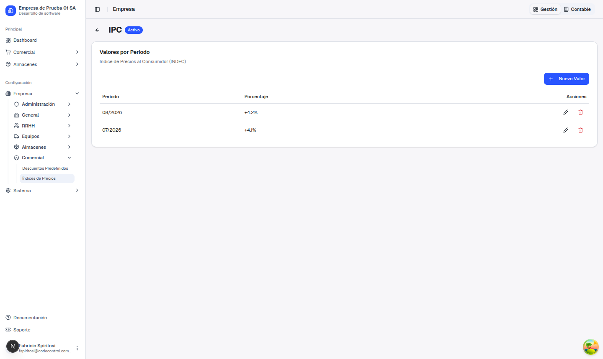
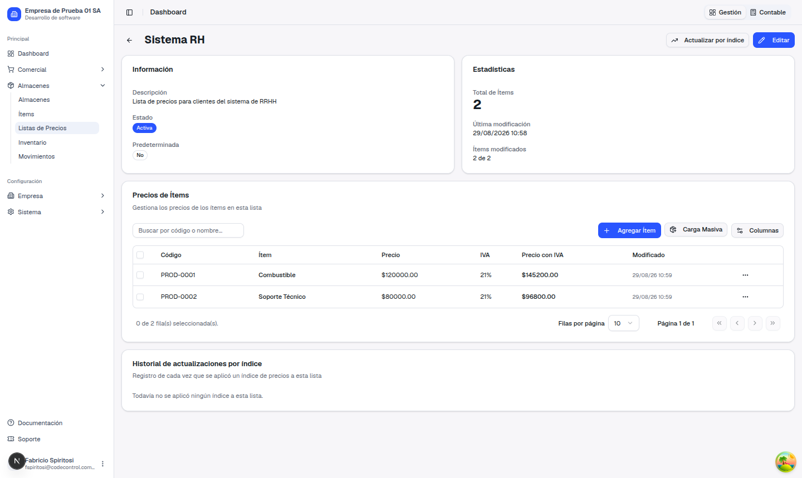
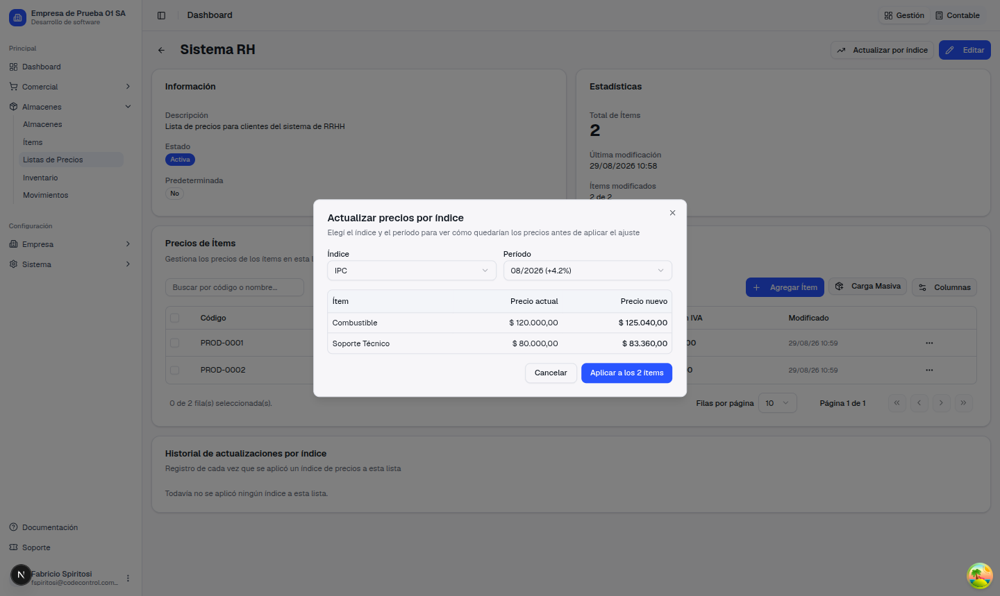
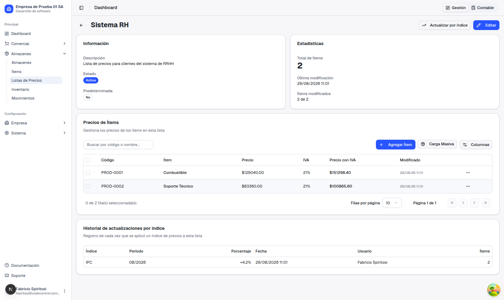
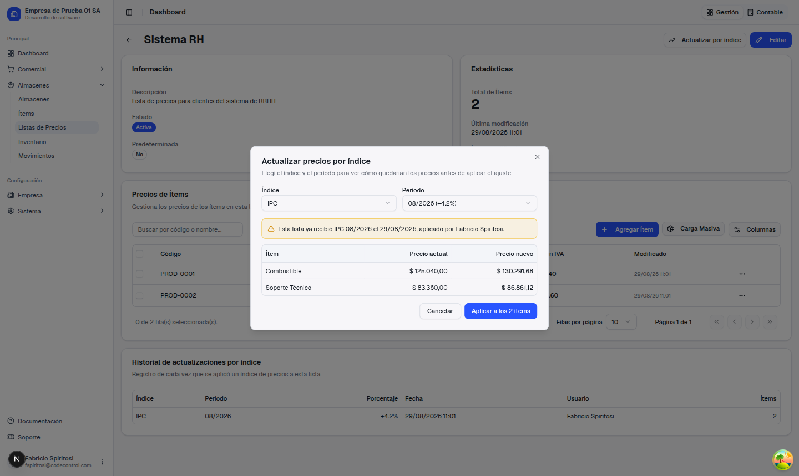

Guía de presentación — qué pedías, qué cambió y cómo usarlo
En Almacenes, sobre la lista de precios "Sistema RH", nos escribiste para pedir una forma de actualizar los precios de una lista completa de una sola vez, en lugar de tener que editarlos ítem por ítem:
Hasta ahora, una lista de precios se armaba y corregía a mano, ítem por ítem. No había ningún lugar donde guardar "el IPC de este mes" ni una forma de aplicarlo a todos los precios de golpe.
Para actualizar precios por inflación había que entrar ítem por ítem, calcular el nuevo precio a mano y cargarlo. En una lista con varias decenas de ítems, era un trabajo largo y con más margen de error.
Se cargan los índices de precios de la empresa (por ejemplo, el IPC) con su valor de cada mes, y desde cualquier lista de precios se elige el índice y el período: el sistema calcula y actualiza todos los precios de la lista de una sola vez, mostrando antes una vista previa de cómo va a quedar cada uno.
Vamos a seguir el caso típico: sale el IPC de agosto (+4,2%) y hay que aplicárselo a la lista "Sistema RH".




El precio con IVA no hay que calcularlo aparte: siempre se recalcula automáticamente a partir del precio nuevo, con la alícuota de cada ítem.
En Empresa → Comercial → Índices de Precios se crean los índices que se van a usar (por ejemplo "IPC" o "Costo de Vida"), y en el detalle de cada uno se cargan los valores mes a mes, a medida que se van publicando. Un índice sin ningún valor cargado para el período que se necesita no se puede aplicar: la pantalla lo avisa y no deja continuar hasta que se cargue.
No hace falta ninguna otra configuración: en cuanto el índice tiene su valor del mes cargado, cualquier lista de precios con ítems ya puede usarlo.
El sistema recuerda cada actualización que se hizo. Si volvés a elegir un índice y un período que esa misma lista ya recibió, aparece un aviso con la fecha y quién lo aplicó — pero te deja continuar igual, porque puede haber un motivo válido para repetirlo. Lo que buscamos evitar es que se aplique dos veces por error, sin darse cuenta: aplicar dos veces un 4,2% no es un 4,2%, es casi un 8,6%.

Una vez que confirmás "Aplicar", no hay un botón para deshacer esa actualización. Parece que alcanzaría con restar el mismo porcentaje para volver atrás, pero no es así: entre que se aplica un índice y que alguien quisiera revertirlo, los precios de esa lista pueden haberse corregido a mano, pueden haberse agregado ítems nuevos, o puede haberse aplicado otro índice encima. Restar el porcentaje sobre ese estado no devuelve los precios de antes: los rompe.
Por eso la vista previa del paso 3 es el momento clave: es la oportunidad de revisar que el resultado es el que esperás, antes de que se toque un solo precio. Y si igual algo se aplicó por error, el historial de la lista siempre queda disponible para ver exactamente qué se hizo y corregir a mano con esa información a la vista.